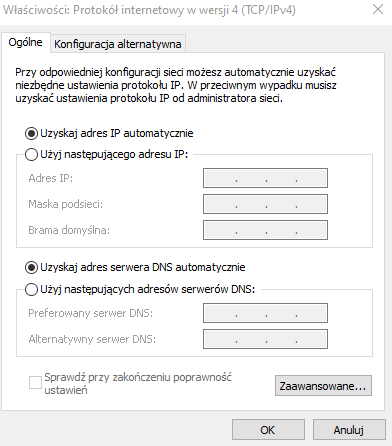
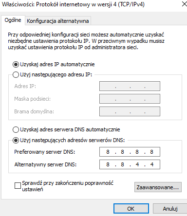
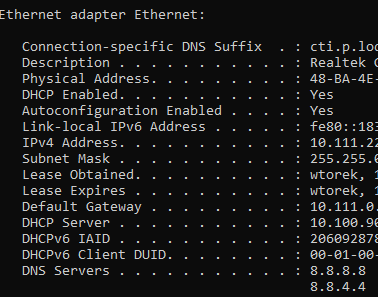
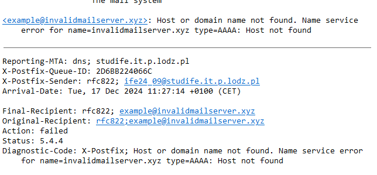
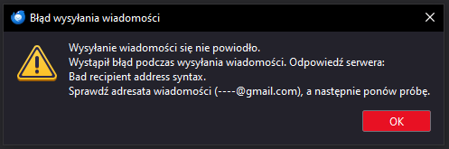
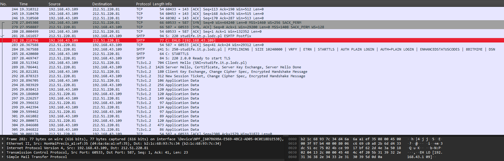

DNS System and Mail System Overview
A detailed explanation of DNS and Mail Systems
1. DNS System
1.1.1. List of Top Level Domains
- .com - Commercial
- .org - Organizations
- .net - Network
- .gov - Government
- .edu - Education
- .mil - Military
- .int - International
- .info - Information
- .biz - Business
- .(ex. pl) - Country code
1.1.2. Hierarchical Structure of DNS
DNS follows a hierarchical structure:
- Root Level (.): managed by root name servers
- Top-Level Domains (TLDs)
- Second-Level Domains: in www.example.com example is a second level domain
- Subdomains: sections of main domain in www.payments.PKO.com payments would be subdomain
- Hostnames: specific devise within the domain, for website it is usually www
DNS Queries:
After writing domain name the computer searches DNS cache for their adress, if it does not find it, it will send a querry to internet provider
Then DNS resolver of the provider will start looking for domain, it has acces to all top level domains and then go down in hierarchy until it finds the server with adress
There is also an iterative querry where the DNS resolver asks all the queries
Here the resolver asks first top level domain server and when it returns a second level domain it asks the second level domain and so on
It makes so that the client takes more computing than servers
DNS Delegation:
When companies create subdomains, they often delegate the management of those subdomains to another DNS server. This is achieved by adding NS (Name Server) records to the parent domain. When someone queries the new subdomain, the DNS system directs the query to the designated authoritative server for that subdomain.
1.1.3. DNS Records
They are types of data stored in servers that allow response to specific queries
DNS records include:
- A Record (Address Record): Maps a domain name to an IPv4 address (e.g., example.com → 192.0.2.1).
- AAAA Record: Maps a domain name to an IPv6 address instead of IPv4.
- CNAME Record (Canonical Name): Creates an alias for a domain, pointing one domain to another (e.g., www.example.com → example.com).
- MX Record (Mail Exchange): Specifies mail servers responsible for receiving emails for a domain.
- TXT Record (Text Record): Stores text-based information for verification and security, such as SPF and DKIM.
- NS Record (Name Server): Specifies the authoritative DNS servers for a domain.
- SOA Record (Start of Authority): Contains administrative information like the primary DNS server and timing settings.
- SRV Record (Service Record): Specifies the location (host and port) of specific services, such as SIP or VoIP.
- PTR Record (Pointer Record): Used for reverse DNS lookups, mapping IP addresses back to domain names.
- CAA Record (Certificate Authority Authorization): Controls which certificate authorities are allowed to issue SSL/TLS certificates for the domain.
- DNSSEC Records: Provide security for DNS by verifying that records are authentic.
1.1.3+ Security and DNSSEC
DNS security works on public/private keys and a "chain of trust" in which the root server contains the public key trusted by everyone, root gives signature to TLD's depending on content, they have a public key and siganture of their own and so on.
DNSSEC introduces 2 new Records DS and RRSIG which are
- RRSIG Record : Contains private key for signing files and sigantures with methods of its generation and expiration date.
- DNSSEC Record : Contains public key which is used to recognise domains or files signed by the domain and signature of parent domain which proofs autenticity of the domain.
- DS Record : Contains a hashed public key of domain's child, allowing it to quickly verify it's identity
1.1.4. Authoritative and Non-Authoritative Answers
Authoritative Answer: Provided by the name server that holds the official DNS records.
Non-Authoritative Answer: Provided by DNS resolvers, often from cached results.
1.1.5. DNS Resolver, Cache, and /etc/hosts
DNS Resolver: Resolves domain names to IP addresses, the slowest.
DNS Cache: Stores previously queried results to speed up DNS resolution, is cleared after some time, quite fast.
/etc/hosts File: A local file used to map domain names to IP addresses before querying DNS, the fastest.
2. Mail System
2.1.1. Mail Protocols
1. POP3 (Post Office Protocol version 3)
POP3 is primarily used for retrieving emails from a remote mail server and typically deletes them from the server once downloaded to the client.
Basic POP3 Commands
USER - Starts the login process, where is the user's login name.
PASS - The password used to authenticate the user.
STAT - Returns the number of messages and total size in the mailbox.
LIST - Lists all the messages with their IDs and sizes.
RETR - Retrieves a specific message.
DELE - Deletes a specific message from the server.
QUIT - Ends the session and logs out.
Example POP3 Communication
1. Client connects to the server.
2. Client sends: USER and PASS .
3. Server responds with a success message.
4. Client retrieves messages using: RETR .
5. Client deletes the message from the server using: DELE .
2. IMAP (Internet Message Access Protocol)
IMAP allows for full synchronization with the server, enabling users to manage emails across multiple devices without downloading or deleting them from the server.
Basic IMAP Commands
USER - Begins the login process.
PASS - Provides the password for authentication.
SELECT - Selects a specific mailbox (e.g., INBOX).
FETCH - Fetches specific messages or parts of messages.
STORE +FLAGS (\Seen) - Marks a message as read.
SEARCH - Searches for emails based on criteria.
EXAMINE - Opens a mailbox in read-only mode.
LOGOUT - Logs out of the server.
Example IMAP Communication
1. Client connects to the server.
2. Client sends: USER and PASS .
3. Client selects the INBOX with: SELECT INBOX.
4. Client retrieves messages using: FETCH .
5. Client manages flags with: STORE +FLAGS (\Seen) to mark a message as read.
3. SMTP (Simple Mail Transfer Protocol)
SMTP is used for sending emails from a client to a server or between servers. It does not handle incoming mail (that’s POP3 or IMAP’s job).
Basic SMTP Commands
HELO - Starts the communication session and introduces the sending mail server.
MAIL FROM: - Specifies the sender's email address.
RCPT TO: - Specifies the recipient's email address.
DATA - Begins the transmission of the email body.
QUIT - Ends the SMTP session.
RSET - Resets the session in case of errors.
Example SMTP Communication
1. Client connects to the SMTP server.
2. Client sends: HELO to introduce itself.
3. Client specifies the sender with: MAIL FROM:.
4. Client specifies the recipient with: RCPT TO:.
5. Client sends the email body using: DATA.
6. Server acknowledges the message and delivers it or queues it for later.
2.1.2. NNTP Protocol
Network News Transfer Protocol (NNTP) is used to read and post newsgroup articles. They have a structure similar to Email but are intendet to be used by groups of people, largely obsolete.
2.1.3. E-mail Mailbox
An email mailbox is a logical container for storing messages that are sent or received by a user. In simple terms, it's where emails are kept, and it can exist in different forms depending on how it's configured and accessed.
Parameters: Name, email address, type(IMAP or POP3), permission(read, write, admin) and mailbox quota(amount of mails an Mailbox can hold).
Aliases: E-mail adress that redirects recieved mail to designated Mailboxes, can be created and destroyed without affecting users
Catch-All Adresses: They are specific adresses that are used to get all mail in domain sent to non existing users.
Subadressing: Specific variation of adresses that can filter mail to specific folders
Adress structure: Adresses must have a local and domain part like local@domain.TLD wit domain having at least one dot
2.1.4. E-mail Structure
Email Structure Overview
- Headers: Metadata that helps route and identify the email (e.g., From, To, Subject).
- Body: The main content of the email, which can be plain text or HTML.
- Attachments: Files sent along with the email.
- MIME: Allows for more complex email structures, including mixed content like text and attachments.
- Signature: A block of text appended at the end of the email, often containing contact info.
Email Headers Overview
- From: Specifies the sender’s email address.
- To: Specifies the recipient’s email address (or addresses).
- Cc (Carbon Copy): Specifies secondary recipients who are also sent the email.
- Bcc (Blind Carbon Copy): Similar to Cc, but recipients in this field are hidden from the others.
- Subject: A brief description or title of the email's content.
- Date: The timestamp of when the email was sent.
- Message-ID: A unique identifier for the email.
- Reply-To: Specifies the address to which replies should be sent (if different from From).
- Return-Path: The address to which bounce-back messages should be sent.
2.1.5. Attachments and MIME
MIME: Multipurpose Internet Mail Extensions allow attachments like documents, images, and more by encoding them to text format acceptable by mailing protocols.
2.1.6. Mailing Lists and E-mail Gate
Mailing lists allow sending emails to multiple users and moderate it for content or to add some headers. Email gates allow to modify emails going in and out of network for archiving, security or to change from one protocol to other.
2.1.7. E-mail Security
Common security protocols:
- TLS: Encrypts email communication by first checking the servers certificate and then making both machines agree on used protocol version, encryption algorithm and finally key used for comunication.
- STARTTLS: Protocol used to enable TLS connection during transmission, requiers to be supported, used with plain text protocols
- PGP: Encrypts emails contents using recipients keys, requires specialised software but encryption used is localised
- S/MIME: Encrypts emails contents with keys based on Certificates, embeded in most systems but encription is centralised
2.1.8. Spam and Filtering
SpamAssassin (Spam Filtering Software)
Apache SpamAssassin is one of the most widely used open-source spam filtering systems.
How SpamAssassin Works:
- Rule-Based Scoring: SpamAssassin uses a scoring system to evaluate an email's likelihood of being spam. It checks for specific patterns like keywords, formatting, and suspicious links.
- Bayesian Filtering: A statistical model based on "good" vs. "spam" email. It learns over time from user input and adapts to new spam trends.
- RBL Checks: SpamAssassin queries Realtime Blackhole Lists (RBL) to identify sender IP addresses associated with spam.
- Header and Content Analysis: It analyzes email headers (e.g., sender information) and body content for suspicious patterns or indicators.
- DNSBL (DNS-based Blacklists): Checks DNS-based blacklists to identify IPs/domains linked to spam.
- SpamAssassin Rules: Administrators can define custom rules to suit their environment for spam detection.
Postfix + Amavis (Spam and Malware Gateway)
Postfix is a popular mail transfer agent (MTA), and Amavis is a content filter often used alongside SpamAssassin for spam and malware detection.
How Postfix + Amavis Work:
- Content Inspection: Postfix receives an email and hands it over to Amavis for inspection.
- Integration with Antivirus: Amavis integrates with antivirus engines to detect malware or suspicious attachments.
- Spam Filtering: Amavis uses SpamAssassin for spam analysis.
- Policy Enforcement: Administrators can define rules for quarantining, rejecting, or tagging spam/malware emails.
RBL and DNSBL Services
RBL (Realtime Blackhole List) and DNSBL (DNS-based Blacklist) are databases of IP addresses or domains associated with spam or malware.
How DNSBL Works:
- The mail server extracts the sender’s IP address upon receiving an email.
- The server queries the DNSBL service to check the sender's IP against the blacklist.
- If the IP is blacklisted, the email can be rejected, flagged, or filtered.
Popular DNSBL services track and manage lists of suspicious IPs or domains, aiding in efficient spam filtering.
ClamAV (Malware Scanning Software)
ClamAV is an open-source antivirus engine used to scan email attachments for malware.
How ClamAV Works:
- Signature-Based Detection: ClamAV uses a database of known malware signatures to detect threats in email attachments.
- Integration: It works alongside tools like Amavis or SpamAssassin to analyze incoming emails.
- Real-Time Scanning: The software scans files (e.g., attachments) as they pass through the server.
Protocols and Techniques Supporting Spam and Malware Filtering
Various protocols and techniques support email validation and reduce spam:
- SPF (Sender Policy Framework): Ensures that an email is sent from an IP address authorized by the domain owner. Mail servers check the sender’s SPF record to verify legitimacy.
- DKIM (DomainKeys Identified Mail): Allows the sender to attach a digital signature to emails, verifying that the message hasn’t been tampered with.
- DMARC (Domain-based Message Authentication, Reporting & Conformance): Combines SPF and DKIM to provide email validation and policy enforcement. DMARC helps mail servers determine how to handle emails failing SPF or DKIM checks.
Graylists: Temporarily reject emails to verify legitimacy.
- Temporary Rejection: When an email server receives a message from an unfamiliar or unknown sender, the server initially rejects the email with a temporary failure message (typically a 4xx error code in the SMTP protocol). This is not a permanent rejection, but rather a "delay" tactic.
- Wait and Retry Mechanism: Legitimate mail servers are designed to retry sending the email if they receive a temporary failure. These retries usually occur within minutes to hours after the initial rejection.
- Tracking and Whitelisting: The graylist maintains a record of senders that have been temporarily rejected and their retry attempts. If the same email server tries to send an email again within a certain time frame (usually a few minutes to hours), the graylist will allow the email to pass through. This retry process helps confirm that the sender is legitimate.
- Spam Prevention: Most spam-sending servers do not retry sending messages if they are initially rejected. These servers tend to send a bulk of messages in one attempt and do not have the retry functionality that legitimate mail servers do. As a result, graylisting helps block a significant amount of spam by delaying it, while allowing legitimate messages to get through after retrying.
Practical Part
2.1. DNS System
2.1.1. Display DNS Settings
The DNS settings were displayed on the computer using Control Panel and ipconfig. Below are screenshots showing the original DNS settings and the updated settings after changing to Google's DNS server:



2.1.2. Using DNS Tools
2.2. Mail System
2.2.1. Configuring Thunderbird
Thunderbird was configured to send and receive emails from studife.it.p.lodz.pl. (See screenshot below)
2.2.2. Sending Emails to Specific Scenarios



2.2.3. Analyzing Email Traffic with Wireshark
The process of sending and receiving emails using Thunderbird was captured and analyzed in Wireshark.

2.2.4. Sending and Receiving Emails Using Telnet
Emails were sent and received using telnet, connecting to both SMTP and POP3 servers. The process and results are detailed in the screenshots below: